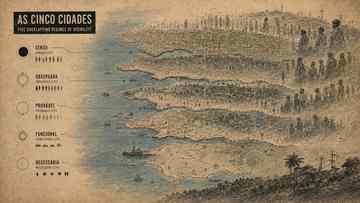
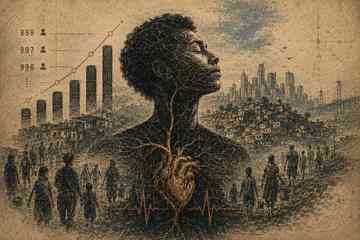

Censo permanente · camadas de visibilidade
As cinco cidades
197.196
camada oficial · referência
População reconhecida administrativamente. É a cidade que cabe no cadastro.
Uma cidade não tem um único número. Ela muda conforme o critério de contagem. Este portal confronta população oficial, observada, provável, funcional e necessária — e pergunta o que acontece com quem permanece entre uma camada e outra.
População reconhecida administrativamente. É a cidade que cabe no cadastro.
“Os números produzem cidades distintas porque o reconhecimento estatístico, a presença material e a necessidade coletiva não são equivalentes.”Jesus Crypto · Curadoria do Portal P01

Mapa-infográfico em digigravura: cidade censitária, observada, provável, funcional e necessária como regimes distintos de reconhecimento.

Prancha conceitual que tensiona número, corpo e permanência: o dado sobe, mas a vida concreta continua exposta.
3min55s · métrica urbana versus corpo e vida. A canção pertence à trilha expandida do Companion Book e aqui funciona como ponte seletiva para P01, deslocando a leitura do número para o corpo e para a desigualdade territorial.
Regra do portal: esta experiência acrescenta uma camada ao romance; não substitui a narrativa nem oferece uma resposta única. O leitor deve sair com uma pergunta mais precisa sobre contagem, reconhecimento e poder.
Estado editorial: P01 · protótipo web v03 · interface editorial/museográfica em digigravura · versão pública no GitHub Pages para teste editorial e curatorial.